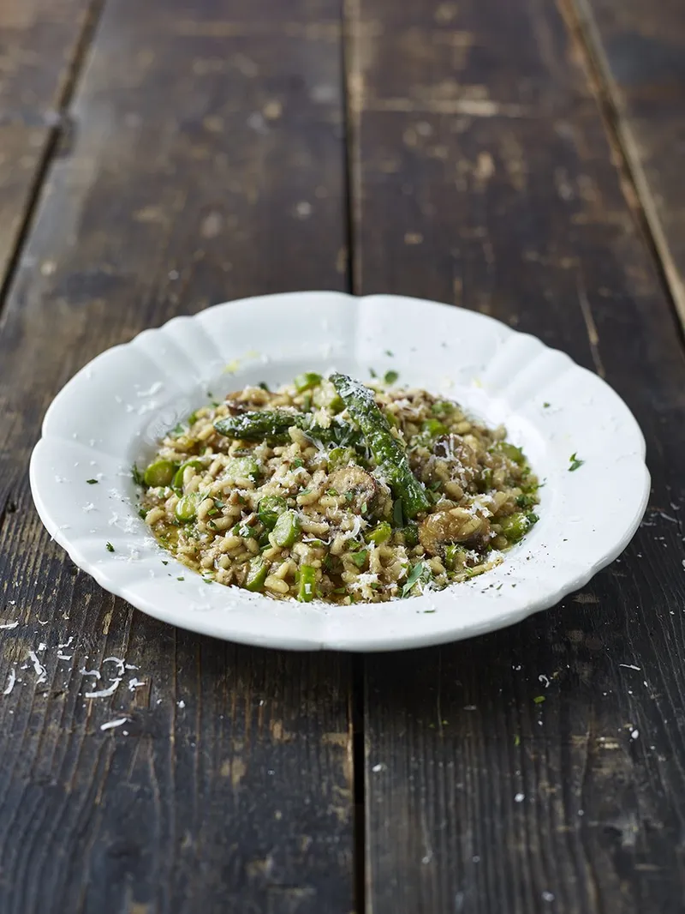

Risotto

Basic Risotto Bianco
Super easy blueprint that gives you all the tools to make a
variety of tasty risottos.
Serves 6. Cooks in 45 mins.
Not too tricky but requires some patience
to get right.
Ingredients
- 1.1 litres (2 pints) organic stock (chicken, fish or
vegetable, as appropriate)
- 1 large onion
- 2 cloves of garlic
- 4 or 5 sticks of celery
- olive oil
- 70g of butter, plus 1 extra knob for frying
- 400g of risotto rice
- 2 wineglasses of dry white vermouth (dry Martini
or Noilly Prat) or dry white wine
- 115g Parmesan cheese
Steps
- Heat the stock. Peel and finely chop the onion and garlic.
Trim and finely chop the celery.
- Put 2 tablespoons of olive oil and the knob of butter into a
separate pan, add the onion, garlic and celery, and cook very
slowly for about 15 minutes without colouring. This is
called a soffrito. When the vegetables have softened,
add the rice and turn up the heat.
- The rice will now begin to lightly fry, so keep stirring it.
After a minute it will look slightly translucent. Add the
vermouth or wine and keep stirring – it will smell fantastic.
Any harsh alcohol flavours will evaporate and leave the rice
with a tasty essence.
- Once the vermouth or wine has cooked into the rice, add your
first ladle of hot stock and a good pinch of sea salt. Turn
the heat down to a simmer so the rice doesn't cook too quickly
on the outside. Keep adding ladlefuls of stock, stirring and
massaging the creamy starch out of the rice, allowing each
ladleful to be absorbed before adding the next. This will take
around 15 minutes.
- Taste the rice to check if it’s cooked. If not, carry on
adding stock until the rice is soft but with a slight bite.
Don’t forget to check the seasoning carefully. If you run out
of stock before the rice is cooked, add some boiling water.
- Remove from the heat and add the 70g butter and grate in the
Parmesan. Stir well. Place a lid on the pan and allow to sit
for 2 minutes. This is the most important part of making the
perfect risotto, as this is when it becomes amazingly creamy
and oozy like it should be. Eat it as soon as possible, while
it retains its beautiful texture.
Nutritional Information
- Calories - 569
- Fat - 23.7g
- Saturates - 12.5g
- Sugars - 4.5g
- Salt - 0.9g
- Protein - 16.6g
- Carbs - 62g
- Fibre - 1.6g